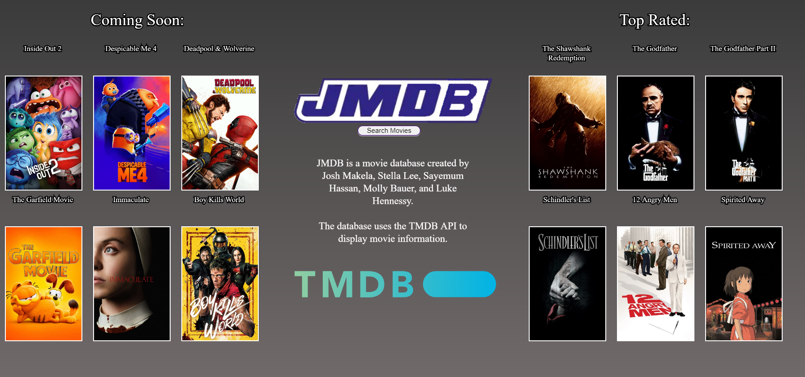
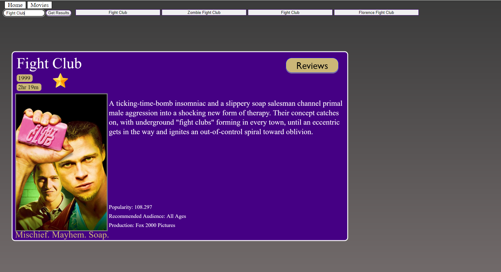

Projects
JMDB
JMDB, aka "James Madison Database" is a educational imitation of
popular movie searching sights like IMDb and Letterboxd. In CS345, our
group wrote this using HTML, CSS, and the p5.js javascript library,
the TMDB API, and utilizing scrum methodologies. I acted as Scrum
Master by leading "daily" (whenever the class met) scrums, assigning
tasks, and aligning project features to deliverables. JMDB is in a
private GitHub repository due to the JMU Honor Code.

